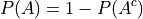

Combinatorics#
Counting#
2014, Free Response, #2
Nine sales representatives, 6 men and 3 women, at a small company wanted to attend a national convention. There were only enough travel funds to send 3 people. The manager selected 3 people to attend and stated that the people were selected at random. The 3 people selected were women. There were concerns that no men were selected to attend the convention.
a. Calculate the probability that randomly selecting 3 people from a group of 6 men and 3 women will result in selecting 3 women.
Based on your answer to part a, is there reason to doubt the manager’s claim that the 3 people were selected at random? Explain.
An alternative to calculating the exact probability is to conduct a simulation to estimate the probability. A proposed simulation process is described below.
Each trial in the simulation consists of rolling three fair, six-sided dice, one die for each of the convention attendees. For each die, rolling a 1, 2, 3, or 4 represents selecting a man; rolling a 5 or 6 represents selecting a woman. After 1,000 trials, the number of times the dice indicate selecting 3 women is recorded.
Does the proposed process correctly simulate the random selection of 3 women from a group of 9 people consisting of 6 men and 3 women? Explain why or why not.
TODO
Probability#
A bank PIN is selected at random from 4 digits.
What is the probability all of the digits are the same?
What is the probability no digits repeat?
What is the probability the PIN starts with the number 7?
Let S be the sample space for flipping a fair, two-sided coin three times. Let A be the event of atleast one heads. Find
 .
.
Solution #8
The word “atleast” is a red flag in problems involving probability. If you see the word “atleast”, it is a fair bet you will need to find the complement of a set at some point. To see why, note the way this problem is phrase can be interpretted with the Aristotle’s Square of Opposition. The Square of Opposition is pictured below for quick reference,

The Square tells us the complement of “some are” (“atleast one”) is “none are”. Therefore, we can express the probability this problem is seeking with the Law of Complements,

Where  corresponds to the event of getting no heads.
corresponds to the event of getting no heads.
This is equivalent to getting all tails, which is a much simpler event to find, because it only has one outcome, namely ttt.
To calculate the probability of this event, we apply the The Fundamental Counting Principle to find the total number of ways the experiment can occur. Each flip has two outcomes, heads or tails. There are three flips in total. Thus,

The probability sought can then be calculated as,

A bag contains 4 red and 5 green balls. Two balls are drawn at random from the bag with replacement.
What is the probability all of them are red?
What is the probability exactly one of them is green?
What is the probability of atleast one green ball?
Why does part a + part c equal 1?
Hint
For part b, consider the outcomes,
rg, gr
In both cases you would have exactly one green ball.
Hint
For part c, the event of getting two green balls is mutually exclusive with the event of getting exactly one green ball.
A bag contains 4 red and 5 green balls. Two balls are drawn at random from the bag without replacement.
What is the probability all of them are red?
What is the probability exactly one of them is red?
What is the probability none of them are red?
Why does part a + part b + part c equal 1?
Lottery In Maryland’s state lottery, 48 balls numbered 1 through 48 are placed into a spinner and well mixed. Six of them are drawn at random, without replacement. There are three prizes awarded based on how many numbers a player is able to guess.
If the six numbers drawn match the numbers the player has chosen, the player wins the grand prize. Find the probability of winning the grand prize if a single lottery ticket is purchased.
If five of the six numbers drawn match the numbers the player has chosen, the player wins the second place prize. Find the probability of winning the second place prize if a single lottery ticket is purchased.
If four of the six numbers drawn match the numbers the player has chosen, the player wins the third place prize. Find the probability of winning the third place prize if a single lottery ticket is purchased.
Find the probability of not winning the Maryland Lottery.
Hint
A player not winning is the complement of the event of the player winning the grand prize or the player winning the second place prize or the player winning the third place prize.
The Birthday Problem
Suppose three people are in a room. What is the probability there is at least one shared birthday among these three people?
Suppose ten people are in a room. What is the probability there is at least one shared birthday among these ten pople?
Suppose thirty people are in a room. What is the probability there is at least one shared birthday among these thirty people?
Five Card Poker Find the probability of getting the following hands in 5-card poker.
Royal Flush. Recall a Royal Flush is a hand of cards all of the same suit given by the sequence of faces 10JQKA
Straight Flush. Recall a Straight Flush is a hand of cards all of the same suit given by any sequential ordering of faces, e.q. 45678 or 78910J. Note: In five-card poker, a Royal Flush is not considered a Straight Flush.
Four of a Kind. Recall a Four of a Kind is a hand of cards where four cards all have the same face.
Full House. Recall a full house is a three of kind and a pair simultaneously. For example, Kings full of 8s is given by the sequence KKK88.